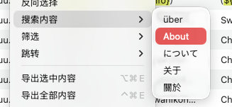

快速搜索

功能概述
快速搜索功能允许用户直接使用选中条目中任意语言的翻译文本作为搜索关键词,一键在整个文件中查找相同或相关的内容。该功能省去了传统的"复制文本
→ 打开搜索 → 粘贴 →
执行"四步操作,简化为一次右键点击,极大提高了搜索效率。特别适合查找重复翻译、验证术语一致性、定位相关条目或检查翻译规范等场景,是提升本地化工作效率的实用工具。
功能特点
一键搜索
传统的搜索流程：
- 选中某个单元格的文本
- 复制文本（
Command + C）
- 打开搜索框（
Command + F）
- 粘贴文本（
Command + V）
- 执行搜索
使用快速搜索：
- 在条目的语言单元格上右键点击
- 选择"搜索 > [语言名称]"
- 立即显示搜索结果
多语言支持
可以选择用任何一种项目配置的语言进行搜索：
- 搜索中文（简体）：使用简体中文翻译作为关键词
- 搜索中文（繁体）：使用繁体中文翻译作为关键词
- 搜索英文：使用英文翻译作为关键词
- 搜索日文：使用日文翻译作为关键词
- 以及项目中配置的所有其他语言
操作步骤
基础操作
定位条目：
- 在内容列表中找到包含目标文本的条目
- 可以是任何一条本地化条目
选择语言：
- 在该条目上右键点击（可以点击任何单元格）
- 找到"搜索"子菜单
- 子菜单中会列出所有可用语言
执行搜索：
- 点击要用作搜索的语言（如"搜索中文（简体）"）
- 搜索框自动打开并填入该语言的翻译文本
- 搜索结果立即显示
查看结果：
- 浏览所有匹配的条目
- 使用上下箭头在结果间跳转
- 检查每个匹配项
使用场景
场景 1：查找重复翻译
背景：
发现某个中文翻译"提交"在项目中多次出现，想找出所有使用这个翻译的条目，检查它们的
Key 是否合理。
操作流程：
- 找到任意一个翻译为"提交"的条目
- 在该条目上右键点击
- 选择"搜索 > 中文（简体）"
- TransX 自动搜索"提交"
- 查看所有匹配结果：
com.app.button.submit = "提交"com.app.form.submit = "提交"com.app.action.submit = "提交"
- 分析这些 Key 是否有冗余，是否应该合并
价值：
- 快速发现翻译重复
- 检查 Key 命名是否规范
- 发现可以复用的文案
场景 2：验证术语一致性
背景：
项目中"用户"这个术语应该统一使用，但怀疑有些地方误用了"用户名"或"账号"。
操作流程：
- 找到正确使用"用户"的条目
- 右键选择"搜索 > 中文（简体）"
- 搜索"用户"
- 查看所有结果，检查翻译是否统一
- 发现不一致的地方，如：
- 某条翻译为"用户名"（Key 本意是"用户"）
- 某条翻译为"账号"（Key 本意是"用户"）
- 修正这些不一致的翻译
扩展操作：
- 分别搜索"用户"、"用户名"、"账号"
- 对比它们的使用场景
- 统一术语标准
场景 3：定位相关功能的文案
背景：
正在审核某个按钮的翻译，想看看相同功能在其他地方的翻译是什么。
操作流程：
- 在当前按钮条目上右键
- 选择"搜索 > 英文"（假设英文是基础语言）
- 搜索该按钮的英文翻译，如 "Submit"
- 找到所有使用 "Submit" 的地方
- 对比不同语言的翻译是否一致
场景 4：检查同义词使用
背景：
发现"删除"和"移除"在项目中都有使用，想统一规范。
操作流程：
- 找到翻译为"删除"的条目
- 右键"搜索 > 中文（简体）"
- 查看所有"删除"的使用情况，记录数量和场景
- 回到列表，找到翻译为"移除"的条目
- 右键"搜索 > 中文（简体）"
- 查看所有"移除"的使用情况
- 根据实际场景，决定统一使用哪个词汇
- 批量替换不统一的翻译
场景 5：验证翻译质量
背景： QA
发现某个日语翻译看起来不太对，想看看项目中是否有类似的错误。
操作流程：
- 在可疑的条目上右键
- 选择"搜索 > 日文"
- 搜索该日语翻译
- 查看所有使用相同日语翻译的条目
- 对比英文或中文原文，判断翻译是否正确
- 如果确认有问题，批量修正所有相关条目
场景 6：查找特殊字符或格式
背景： 某个翻译包含特殊的占位符（如
%@），想找出所有包含占位符的翻译，检查格式是否正确。
操作流程：
- 找到包含
%@ 的任意条目
- 右键选择"搜索 > 英文"（或其他语言）
- 由于占位符在翻译中，会搜索到这个完整的翻译文本
- 然后手动调整搜索框中的内容，只搜索
%@
- 或者直接使用常规搜索功能搜索
%@
注：此场景下快速搜索不是最佳方案，直接使用搜索功能搜索
%@ 更有效。
搜索匹配模式
快速搜索触发后，搜索框会填入选定语言的完整翻译文本，默认的匹配模式取决于
TransX 的设置，可能包括：
完全匹配
搜索与选定文本完全相同的翻译。
示例：
- 选定文本："提交"
- 搜索结果：所有翻译恰好是"提交"的条目
- 不匹配："提交订单"、"确认提交"
包含匹配
搜索包含选定文本的翻译。
示例：
- 选定文本："提交"
- 搜索结果：所有翻译中包含"提交"的条目
- 匹配："提交"、"提交订单"、"确认提交"
调整搜索
执行快速搜索后，可以：
- 修改搜索框中的文本
- 调整搜索模式（完全匹配、包含匹配、正则等）
- 添加更多搜索条件
与常规搜索的对比
| 特性 |
快速搜索 |
常规搜索 |
| 启动方式 |
右键菜单 |
快捷键或菜单 |
| 关键词来源 |
自动填入选定文本 |
手动输入 |
| 操作步骤 |
1步（右键选择语言） |
3-4步（复制、打开、粘贴、搜索） |
| 适用场景 |
已知目标文本 |
需要手动构造搜索词 |
| 灵活性 |
较低（基于现有文本） |
高（可任意输入） |
选择建议：
- 使用快速搜索：当你已经看到了想搜索的文本时
- 使用常规搜索：当你需要搜索
Key、正则表达式或自定义的关键词时
注意事项
- 单条目限制：快速搜索一次只能基于一个条目的一种语言文本
- 空翻译：如果选定语言的翻译为空，快速搜索可能无法执行或搜索空字符串
- 特殊字符：包含特殊字符的翻译文本在搜索时可能需要转义（取决于搜索模式）
- 长文本：非常长的翻译文本作为搜索关键词可能效率较低
- 搜索范围：快速搜索在整个当前文件中进行，不限于当前分组
- 大小写：默认搜索可能区分或不区分大小写，取决于设置
- 性能：在大型项目中，搜索包含数千条结果可能需要一些时间
最佳实践
组合使用搜索功能
- 快速搜索定位：使用快速搜索找到初步结果
- 筛选细化：在搜索结果基础上应用筛选条件
- 加入暂存区：将需要处理的搜索结果加入暂存区
- 批量操作：在暂存区中统一处理
术语管理工作流
- 建立术语表：列出项目中的核心术语
- 逐个验证：对每个术语使用快速搜索
- 记录问题：发现不一致的翻译
- 统一规范：批量替换或修改
翻译审核流程
- 随机抽查：随机选择一些条目
- 快速搜索：对每个条目的关键词进行快速搜索
- 交叉验证：查看其他类似翻译是否一致
- 标记问题：将有问题的加入暂存区
- 集中修正：在暂存区中统一处理
高级技巧
配合拷贝功能
如果快速搜索不够精确：
- 使用拷贝功能复制目标文本
- 打开常规搜索
- 粘贴并调整搜索条件
- 使用更精确的匹配模式
多语言对比搜索
场景：验证某个英文术语在各语言中的翻译一致性
操作：
- 快速搜索该术语的英文版本，记录结果
- 选择其中一条，快速搜索中文版本，记录结果
- 再快速搜索日文版本，记录结果
- 对比三次搜索的结果数量是否一致
- 如果数量不一致，说明有些条目缺少某语言的翻译
查找未本地化的内容
场景：查找直接使用英文作为默认翻译的条目
操作：
- 找到一个明显未翻译的条目（英文和中文内容相同）
- 快速搜索其中文版本
- 在结果中筛选出英文和中文完全相同的条目
- 这些就是未本地化的内容
键盘快捷键
虽然快速搜索主要通过右键菜单访问，但可以配合快捷键提高效率：
高效操作流程：
- 使用方向键或鼠标选中目标条目
- 右键打开菜单（或使用快捷键，如右键菜单键）
- 使用方向键导航到"搜索"子菜单
- 选择目标语言
Enter 执行搜索
与其他功能的配合
配合筛选功能
- 使用快速搜索找到相关条目
- 在搜索结果上应用筛选（如"缺失翻译"）
- 得到精确的目标条目集
配合暂存区
- 快速搜索找到需要处理的条目
- 全选搜索结果
- 加入暂存区
- 在暂存区中批量处理
配合导出功能
- 快速搜索特定术语
- 选中搜索结果
- 导出为术语表或审核清单